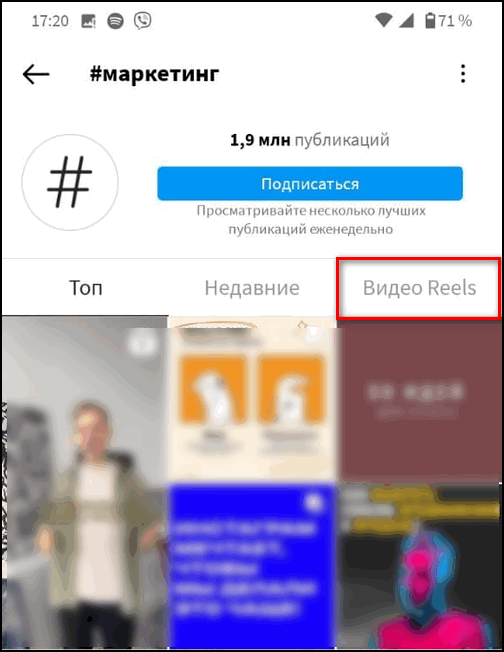
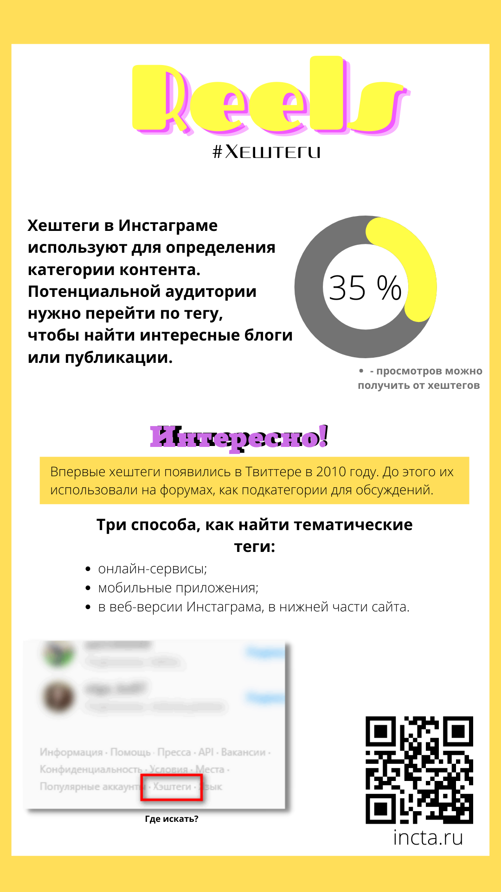

Хештеги для раскрутки и продвижения Рилс в Инстаграме

- Эффективность продвижения с помощью хештегов в Reels
- Популярные хештеги для Lifestyle блога
- Список для продвижения кулинария и быт
- Рукоделие и DIY
- Танцы и приколы
- О школе и семье
- Саморазвитие и бизнес
- Как правильно подобрать теги для блога в Инстаграме*
- ТОП 50 универсальных хештегов для любого блога и видео
Хештеги для Reels в Инстаграме* необходимы для быстрого продвижения публикации, выбора категории. Они должны соответствовать основной теме аккаунта.
Эффективность продвижения с помощью хештегов в Reels
Популярные хештеги в Инстаграме* Рилс отделяют контент в определенную категорию. При поиске новых тегов, пользователь увидит три новые вкладки: «Недавно добавленные», «Популярные» и «Reels». В последнем появится функциональная кнопка «Использовать», нажав по которой, пользователь будет переведен на съемку клипа под этим тегом. При размещении, хештег будет указан в описании.
Как искать хештеги и использовать:
- Зайти в Инстаграм* – перейти к глобальному поиску.

- Вписать тег – переключиться на вкладку: «Reels».

- Появится кнопка: «Использовать» - записать клип и опубликовать.
В зависимости от популярности выбранной темы, можно собрать от 100 просмотров на первых видео. Если в профиле уже были подписчики, то число соответственно увеличивается.
Актуальность темы влияет на продвижение аккаунта в общем. Например, если владелец профиля подобрал узко-специализированную, то ожидать массовых просмотров в Рилс не стоит.
Популярные хештеги для Lifestyle блога
LifeStyle – одно из популярных направлений в ведении личного блога. Автор просто делиться повседневными занятиями, помогает подписчикам и пишет о своих хобби. Нередко такой формат блогов объединяют с экспертностью: автор рассказывает об образовании, своей работе и дает консультации. Популярные хештеги в Инстаграме* для лайфстиля:
Как и в обычных публикациях, в Reels можно использовать только ограниченное количество тегов. Рекомендуется не больше 10, чтобы они не занимали лишние символы.
Список для продвижения кулинария и быт
Владельца блогов, которые специализируются на кулинарии и бытовых вопросах также пригодится список тегов для продвижения своих постов. В Инстаграме* тема кулинарии популярна и просмотры зависят от стиля, легкости предложенных вариантов. Например, можно запустить кулинарную страницу для подростков или студентов, показывая простые рецепты.
Рукоделие и DIY
Еще одна тема, которая пользуется популярностью в социальной сети – рукоделие. Пользователи могут использовать теги, чтобы найти контент у конкурентов и сделать контент, который войдет в ТОП.
И для тех, кто предлагает креативные идеи для дома, подарков:
Танцы и приколы
ТОП хештегов в Инстаграме* Рилс занимают танцы и приколы. В основном, это видеозаписи, которые не несут особой смысловой нагрузки. Но продвигать контент таким способом проще, чем придумывать оригинальные идеи.

О школе и семье
Тематика школьных будней и отношений с близкими – обширна. Пользователь может продемонстрировать как положительное социальное видео, так и драматические сюжеты. Хештеги подбирают с учетом идеи и эмоций, которые автор хотел вызвать у зрителей:
Саморазвитие и бизнес
Бизнес и саморазвитие – тема большинства блогов в Инстаграме*. Это страницы, которые посвящены разбору любимых книг, поиску себя, планированию бизнес-идей.
Как правильно подобрать теги для блога в Инстаграме*
Найти Рилс по хештегу в Инстаграме* несложно: автору нужно задать запрос в глобальном поиске и переключиться на соответствующую вкладку. Но чтобы продвигать свой контент, нужно правильно подобрать метки. Неверно указанные хештеги могут повлиять на дальнейшее продвижение контента, скрыв его от потенциальной аудитории.
- обратить внимание на публикации. Если владелец блога ранее использовал метки для постов – их стоит применить и для Reels;
- конкуренты. Выделить конкурентные профили и выделить их хештеги;
- подобрать несколько тем для продвижения. Пользователю необходимо собрать до трех основных тем, чтобы продвигаться в социальной сети.
- подставлять слова по смыслу со значком «@». Например, если пользователь писал о саморазвитии в блоге, то «развитие» и будет основным тегом;
- мобильные приложения и сервисы.
С помощью поиска по тегам можно подобрать метки для своего аккаунта даже с компьютерной версии. Далее, автору блога нужно отметить до 10 подходящих и применять их к своим публикациям. Желательно подбирать новые через каждые три поста, чтобы Инстаграм* не заблокировал профиль за спам.
ТОП 50 универсальных хештегов для любого блога и видео
В социальной сети есть список меток, который подходит для продвижения постов. Таким способом можно продвигать любой блог, но осторожно: большая часть запросов регулярно блокируется из-за высокой нагрузки на сервера. То есть, пользователи настолько часто упоминают эти выражения, что они обновляются в системе в течение каждой секунды.
- #блогер
- #блоггер
- #блогмамы
- #блогвизажиста
- #блогведьмы
- #вблоге
- #блогзож
- #блогнутрициолога
- #продвижениеакаунта
- #продвижениеаккаинстаграм*
- #продвижениегруппы
- #продвижениефотографа
- #маркетинговыйход
- #маркетингплан
- #маркетингонлайн
- #маркетингжив
- #маркетингжизни
- #smmakelifebeautiful
- #smmпродвижение
- #smmменеджер
- #smmблог
- #smmгерл
- #впсихологии
- #ипсихологии
- #психологиялжи
- #психологиямакияжа
- #топа
- #топблог
- #топблогеры
- #топвидео2020
- #топкниг
- #топкартинки
- #топкачество
- #видеоприколы
- #видеорецепты
- #видеостекстом
- #видеоанекдот
- #любовьмоя
- #любовьксебе
- #любовьгреет
- #любовьгода
- #отдыхаем
- #отдыхнаприроде
- #отдыхбезграниц
- #звездышоубизнеса
- #звездыдоипосле
- #звездызажигаются
- #звёздыинстаграм*
- #reelsinstagram*
- #reelsvideo